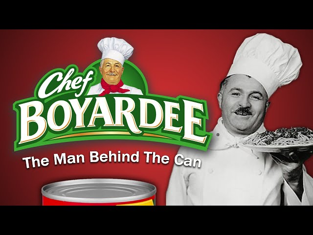

CFAP Inventory View
This was my capstone project that I created alongside Travis Jenkins, Jeremiah Gantt, and Travis Kelley. It was a web application created for the Columbia Foster and Adoption Project. This local nonprofit has an iBelong basket program that allows people to donate money/supplies that are given to children. Our web application allowed them to edit the list of supplies, access donator info, create baskets, track expiration dates and locations of items, etc. This project utilized C#, HTML, CSS, SQL, Github, ASP.net, Bootstrap, Entity Framework 7, and Razor. The project took quite a while to complete but was able to make a difference at the Columbia Foster and Adoption Project.

This project taught me so much about working with other people to break up a huge project into manageable pieces. I learned more from this project than every other assignment I've ever had to complete for school. Working with a real client and creating a product for real-world use came with very high standards for security, attention to detail, and full functionality.
Continuity Narrative
My project from a digital storytelling class, a 1-3 minute silent narrative with no more than three characters and two locations. The emphasis of the project was on creating continuity through shot selection and editing. The only audio allowed was music, no sound effects or dialogue. My group made our spin on the Chef Boyardee rolling can commercial, using different buildings and outdoor areas of Mizzou's campus. Our professor for the class also had an acting role in the video. This project taught me a lot about using angles, settings, and motion to tell a story.
This was my first time making a group film project and I had a great time while learning a lot. Everyone was throwing in their ideas and own creative opinions. It was very rewarding to go through the process of scripting, filming the scenes, and editing to get the final product.
Project 3
This project is a VR game that I created as my VR development final project with Ryland Dohm. The project was a fully playable escape room, with puzzles, interactable objects, hidden areas, and more. The game included two fully completed rooms, as we didn't want to have only one level to play. The puzzles mainly included interacting with the environment, interacting with fully working keypads and TVs for example. The puzzles also changed the environment a lot, opening up doors, making furniture appear and reappear, key location changing, etc. The Google Slides presentation below from the final submission describes the project in great detail.
The project contained easily the most frustrating experiences I've had in IT, while also being one of the most fun projects to work on at times. This class was the first introduction to working with VR headsets, and game making with unity 3D for my partner and I. This led to many mistakes and bugs throughout the way that took hours to fully get rid of. Despite this, it ended up being one of my projects I am most proud of.